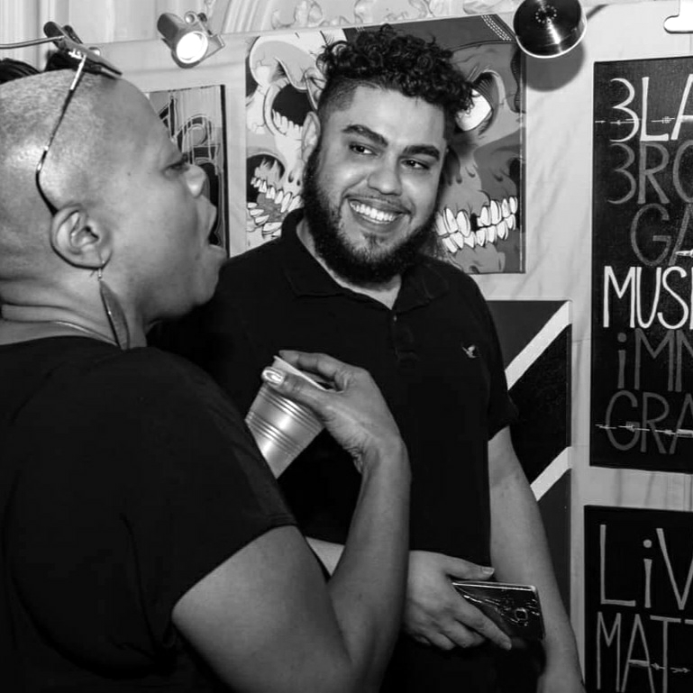
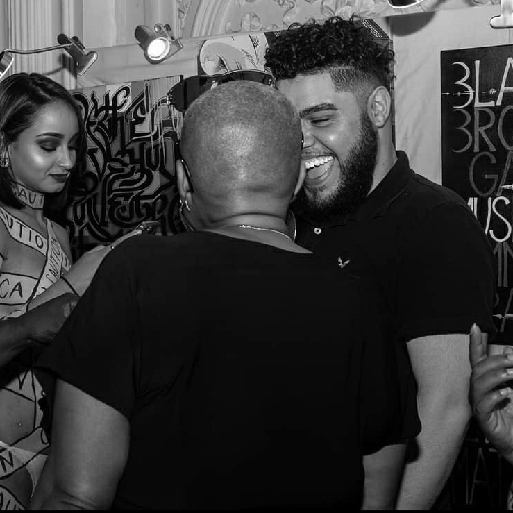
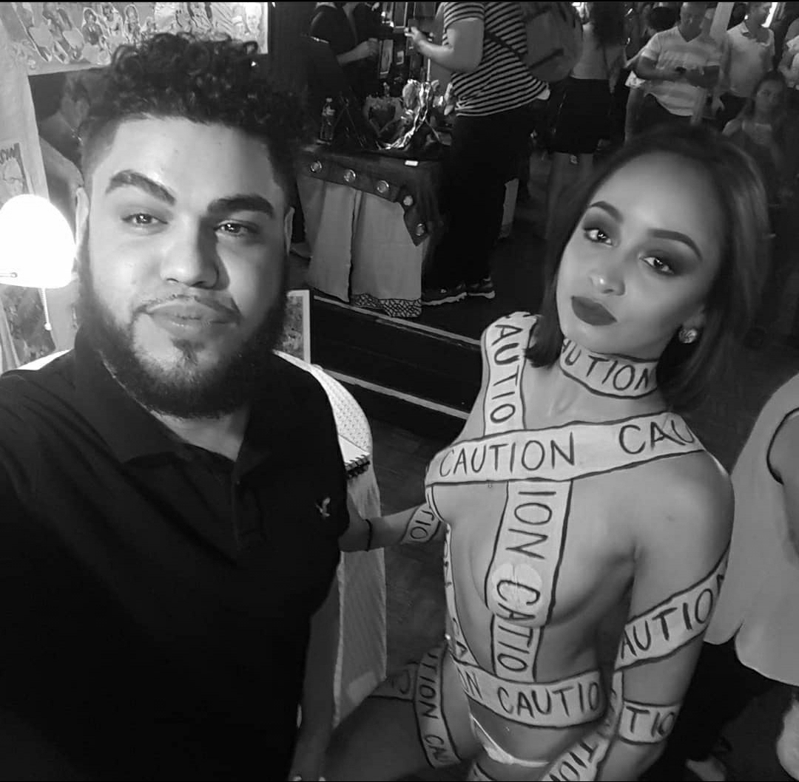

<div class="cd-section" id="AboutMe" style="padding-bottom: 5%;">
    <div class="features-1">
        <div class="container">
            <h2 class="title">About Me</h2>
                <div id="aboutme-picture" class="float-left" style= "width: 50%;">
                  <div id="aboutMeCarousel" class="row carousel slide" >
                        <!-- Indicators -->
                        <ol class="carousel-indicators">
                            <li data-target="#aboutMeCarousel" data-slide-to="1"></li>
                            <li data-target="#aboutMeCarousel" data-slide-to="2"></li>
                            <li data-target="#aboutMeCarousel" data-slide-to="3"></li>
                            <li data-target="#aboutMeCarousel" data-slide-to="4"></li>
                            <li data-target="#aboutMeCarousel" data-slide-to="5"></li>
                            <li data-target="#aboutMeCarousel" data-slide-to="6"></li>
                            <li data-target="#aboutMeCarousel" data-slide-to="7"></li>
                            <li data-target="#aboutMeCarousel" data-slide-to="8"></li>
                        </ol>
                        <!-- Wrapper for slides -->
                        <div class="carousel-inner" role="listbox" >
                            <div class="carousel-item active">
                                
                            </div>
                            <div class="carousel-item">
                                
                            </div>
                            <div class="carousel-item">
                                
                            </div>
                            <div class="carousel-item">
                                
                            </div>
                            <div class="carousel-item">
                        
                                
                            </div>
                            <div class="carousel-item">
                                
                            </div>
                            <div class="carousel-item">
                                
                            </div>
                            <div class="carousel-item">
                                
                            </div>
                        </div>
                        <a class="carousel-control-prev" href="#aboutMeCarousel" role="button" data-slide="prev">
                            <i class="now-ui-icons arrows-1_minimal-left"></i>
                        </a>
                        <a class="carousel-control-next" href="#aboutMeCarousel" role="button" data-slide="next">
                            <i class="now-ui-icons arrows-1_minimal-right"></i>
                        </a>
                    </div>
                </div>
                <div class="row" style="padding-left: 2%;">
                    <div>
                        <p class="description">
                            A multi-hyphenated creative with a knack for the shock factor.  My name is Wilmer and I was born and raised in the urban streets of Philadelphia, where my artistic journey began.  I was exposed to art at a very young age, as I come from a family of creatives. There the romance began.
                        </p>
                        <p class="description">
                            Art has always been a release for me.  The more forms of expression I was introduced to, the more I knew what direction my future would go.  It started with just simple drawings. Drawings then turned to painting, which turned into poetry, then theatre, music, etc. As the world began getting more technical, I was then introduced to graphic design and animation. A few years later, and I can now add web design to the list.  I’m very much a visual artist, but coding allowed me into a realm that, although different, made all my worlds connect and become one.
                        </p>
                        <p class="description">
                            My ultimate goal is to make people feel, no matter the emotion or media.  Art as a whole is subjective, I know everyone isn't going to be a fan, but if I can make one person feel good, smile, cry or feel a bit of hope, my job is done. I want what I’ve been able to create to live on to tell mine & other’s story, long after I’m gone. With that said, WELCOME! I hope you enjoy what you see, and that we get to collaborate in the future on something that'll last forever!
                        </p>
                    </div>
                </div>
        </div>
    </div>
</div>